무엇을 만들고, 무엇이 필요한가요
목표는 내 도메인 주소로 메일을 받고 보내는 일을 모두 평소 쓰는 Gmail 안에서 하는 거예요. 아래 첫 화면을 보면 Gmail 새 메일 창의 보내는 사람 칸에 Air Cursor <hello@aircursor.com>이 들어가 있어요. 이런 주소를 원하는 만큼 만들 수 있어요.
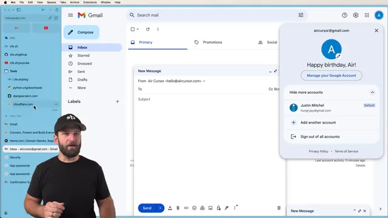
무료로 되는 이유는 Cloudflare가 자기에게 등록된 도메인에 이메일 라우팅을 공짜로 주기 때문이에요. 도메인으로 들어온 메일을 내가 정한 곳으로 전달만 해 줘요. 보내기는 Gmail 서버에 맡겨요. 영상 전체를 한 장으로 줄이면 이렇게 돼요.
준비물은 두 가지예요.
- Gmail 계정: 무료이고 금방 만들어요.
- 내 도메인: 직접 소유했거나 완전히 관리할 수 있어야 해요. 발표자는 name.com에서 샀는데, 사고 나서 보니 Cloudflare에서 사는 것도 그리 비싸지 않았다고 해요. 다른 곳에서 샀다면 Cloudflare로 가져오는 과정이 하나 더 있고, Cloudflare에서 샀다면 그 과정은 건너뛰어요.
도메인을 Cloudflare에 올리고 네임서버 바꾸기
Cloudflare 계정을 만들고 대시보드에서 Add domain으로 들어가요. 아래 화면의 입력칸에 발표자가 쓸 도메인 aircursor.com을 넣었어요. 그 아래에는 Cloudflare에서 새로 도메인을 사는 링크도 보여요.
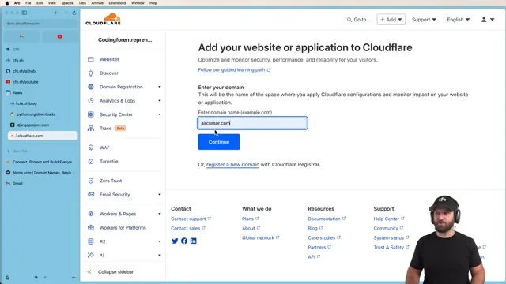
요금제는 Free를 골라요. 이메일 전달은 무료 기능으로 충분해요. 다음은 기존 DNS(Domain Name System) 레코드 검토예요. 화면 위쪽에 'Records we found: 3 A'가 보이고, 그 아래 주황색 칸은 MX 레코드가 없다고 알려 줘요. 막 산 도메인이라 등록 업체가 넣어 둔 '곧 공개' 페이지용 A 레코드 3개만 있었어요.
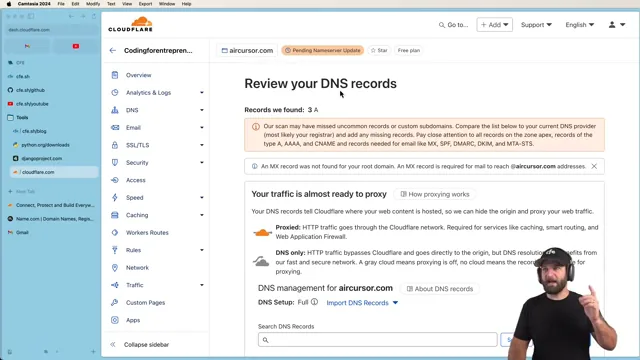
이미 웹사이트나 다른 메일이 붙어 있는 도메인이라면 이 단계가 훨씬 번거로워요. 레코드를 하나하나 맞춰야 하거든요. 발표자는 그런 경우 프록시 상태를 모두 끄고 제대로 동작하는지 확인한 뒤 옮기라고 해요. 그래서 이 방법은 새 도메인으로, 새 프로젝트를 시작할 때 하라고 권해요.
네임서버 바꾸기
마지막 단계에서 Cloudflare가 네임서버 두 개를 알려 줘요. 아래 화면 3번 항목에 audrey.ns.cloudflare.com과 trevor.ns.cloudflare.com이 있고, 그 아래 빨간 X 표시가 지워야 할 기존 네임서버 4개(ns1~ns4.name.com)예요. 이 값은 계정마다 달라요.
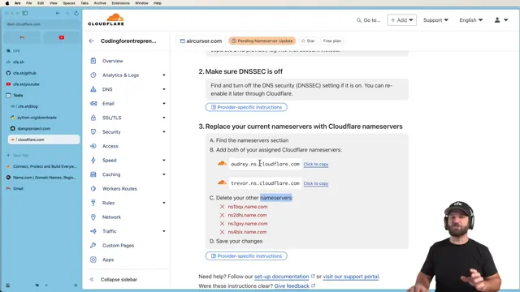
반영은 보통 15분이 안 걸리지만 몇 시간이 걸릴 수도 있다고 해요. 네임서버를 바꾸고 나면 DNS 레코드는 등록 업체(name.com, GoDaddy, AWS(Amazon Web Services) 등)가 아니라 Cloudflare에서 관리해요. 다른 서비스를 못 쓰게 되는 건 아니고, 레코드를 넣는 곳만 바뀌어요.
Email Routing 켜고 DNS 레코드 넣기
네임서버를 바꾸고 새로고침하자 몇 분 만에 도메인이 Active가 됐어요. 이제 무료 이메일 주소를 만드는 Email Routing을 시작해요. 아래 화면에서 Custom address 칸에 hello를 넣고, Action은 'Send to an email', Destination은 aircursor@gmail.com을 골랐어요.
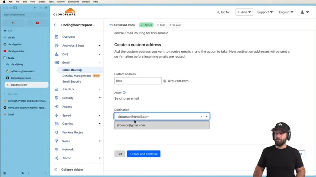
Create and continue를 누르면 상태가 Pending verification이 돼요. Cloudflare가 전달받을 Gmail 주소로 확인 메일을 보내거든요. 아무 주소로나 메일을 넘기면 스팸 통로가 되니, 메일 전달 서비스에서는 흔한 절차예요. Gmail에서 아래 메일의 파란 Verify email address 버튼을 누르면 돼요.
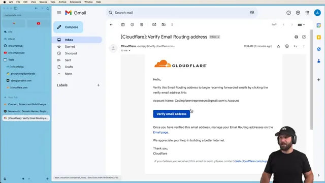
MX와 TXT 레코드 넣기
승인하고 돌아오면 도메인에 넣어야 할 레코드가 나와요. 아래 화면의 표를 옮기면 이래요. Status 열이 모두 빨간 Missing인 상태예요.
| 종류 | 우선순위 | 값 |
|---|---|---|
| MX | 36 | route1.mx.cloudflare.net |
| MX | 10 | route2.mx.cloudflare.net |
| MX | 94 | route3.mx.cloudflare.net |
| TXT | — | v=spf1 include:_spf.mx.cloudflare.net ~all |
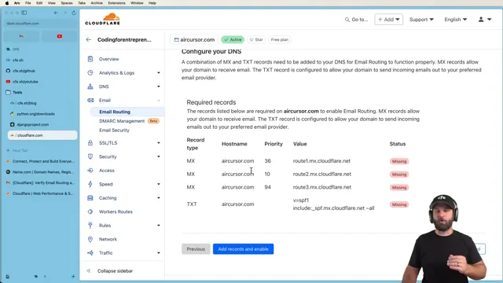
도메인을 Cloudflare로 옮기는 큰 이유가 이거예요. AWS Route 53 같은 다른 곳에서도 MX와 TXT 레코드를 손으로 넣을 수는 있겠지만, 여기선 버튼 하나면 끝나요. 다른 메일 서비스의 레코드와 겹치면 직접 조정해야 해요. 발표자가 새 도메인으로 시작하라고 거듭 권하는 이유예요.
넣은 레코드는 DNS 레코드 목록에 그대로 들어가요. 아래 화면에서 기존 A 레코드 3개 아래로 MX 3개와 TXT 1개가 DNS only(회색 구름)로 추가된 게 보여요. 도메인이 아직 활성화 전이어도 레코드는 미리 들어가 있다가, 활성화되면 그때부터 동작해요.
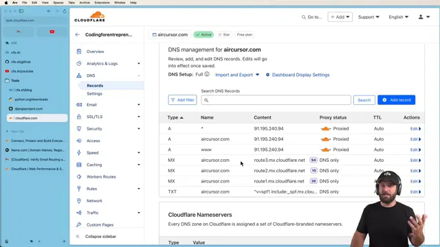
받기 테스트하고 주소 하나 더 만들기
도메인이 Active가 됐으니 첫 주소가 실제로 메일을 받는지 확인해요. Email Routing → Routing rules로 내려가면 Custom addresses 표에 hello@aircursor.com이 있어요. Action은 Send to an email, Destination은 aircursor@gmail.com, Status는 Active예요.
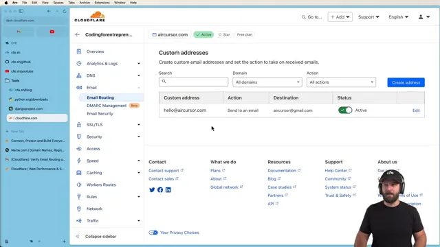
발표자는 다른 Gmail 계정(hungrypy@gmail.com)에서 이 주소로 'Hello World is this working?'을 보내요. 바로 안 올 수도 있어요. DNS 전파 때문이에요. 도메인이 가리키는 서버가 바뀐 걸 전 세계 서버가 알아차리기까지 시간이 걸려요.
메일은 도착했지만 스팸함으로 갔어요. 발표자는 스팸 판정을 받은 건 보낸 쪽인 hungrypy@gmail.com이지, 받은 주소인 hello@aircursor.com이 아니라고 짚어요. '스팸 아님'으로 옮겨 주면 돼요.
문제는 답장이에요. 아래 화면처럼 받은 메일에 답장을 누르면 hello@aircursor.com이 참조(Cc) 칸에 들어가고, 보내는 사람은 Gmail 주소로 남아요. 원하는 건 hello@aircursor.com에서 답장이 나가는 거예요. 이건 다음 두 섹션에서 해결해요.
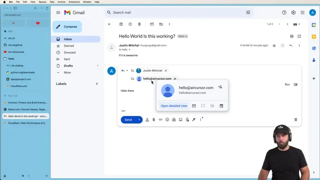
주소 하나 더 만들기
받는 Gmail이 이미 확인됐으니 주소 추가는 금방이에요. Create address에서 Custom address에 justin을 넣고, Action 목록에서 Send to an email을 골라요. 목록에는 Send to a Worker와 Drop도 있어요.
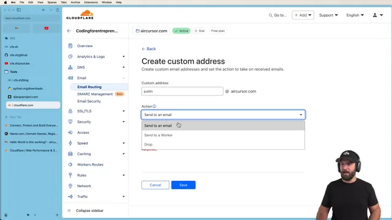
저장하면 바로 Active예요. hungrypy 계정에서 justin@aircursor.com으로 'Hey whats up, Testing 123'을 보내자 Gmail이 '주소를 찾을 수 없음' 같은 오류 없이 보냈고, aircursor 받은편지함에 justin@aircursor.com 앞으로 도착했어요. 받기만으로도 해 볼 만하지만, 진짜 도메인 메일이라면 그 주소로 답할 수 있어야 한다는 게 발표자의 말이에요.
앱 비밀번호 만들고 계정 보안 챙기기
발표자는 먼저 경고해요. Gmail은 원래 이런 용도로 만든 게 아니고, Google은 이걸 위해 비즈니스 계정을 따로 팔아요. 다만 막 시작한 프로젝트에서 돈 드는 서비스를 다 가입하긴 아까우니 이 방법을 쓴다는 거예요.
보내기는 Gmail 설정의 계정 및 가져오기에서 해요. 아래 화면 가운데 'Send mail as:' 줄에 지금은 Gmail 주소 하나만 있고, 그 아래 'Add another email address' 링크로 도메인 주소를 추가하게 돼요. 실제 발송은 Gmail 서버가 내 Gmail 계정으로 로그인해서 해 줘요.
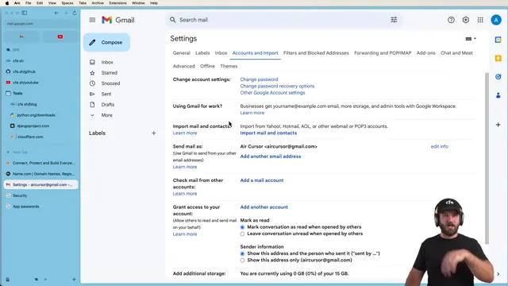
그 로그인에 쓰는 게 앱 비밀번호예요. 내 진짜 비밀번호 대신 프로그램이 Gmail에 로그인할 때 쓰는 별도 키예요. 발표자는 API(Application Programming Interface) 키 같은 거라고 설명해요. Google 계정 관리에서 'app passwords'를 검색하고, 보안 항목의 앱 비밀번호를 열어 본인 확인을 하면 아래 화면이 나와요.
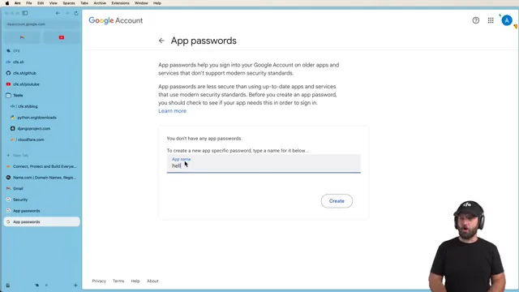
- Django나 Next.js 프로젝트에서 메일을 보낼 때도 같은 식으로 용도마다 하나씩 만들어요.
- 지우는 순간 그 비밀번호는 더 이상 안 통하고, 그걸 쓰던 프로그램도 멈춰요.
- 발표자는 비밀번호를 어디에도 저장하지 않아요. 필요하면 새로 만들고 옛것을 지우는 게 더 쉽다고 해요.
계정 보안 올려 두기
앱 비밀번호를 만들었다는 건 계정에 들어올 문이 하나 더 생겼다는 뜻이에요. 그래서 같은 보안 화면에서 2단계 인증과 Authenticator(OTP(One-Time Password) 앱)를 켜 두라고 해요. 아래 화면의 'How you sign in to Google' 목록 맨 위에 2-Step Verification이 'On'으로 표시돼 있고, 그 아래 Authenticator 항목이 있어요.
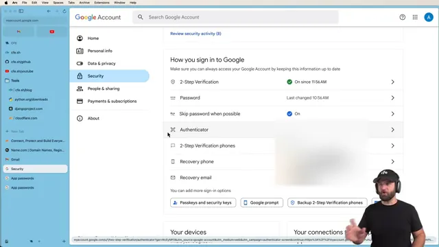
Gmail에서 도메인 주소로 보내고 답하기
Gmail → 톱니바퀴 → 모든 설정 보기 → 계정 및 가져오기 → Send mail as → Add another email address를 누르면 노란 창이 떠요. 아래 화면처럼 Name에 Air Cursor, Email address에 hello@aircursor.com을 넣고 'Treat as an alias'에 체크해요.
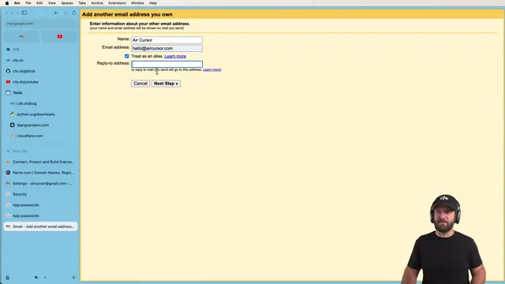
Next Step을 누르면 SMTP 서버 화면이 나와요. 아래 화면처럼 Gmail은 기본값으로 route2.mx.cloudflare.net을 채워 넣어요. 도메인의 MX 레코드를 보고 짐작한 거예요. 하지만 Cloudflare는 메일을 전달만 하고 보내지는 못하니, 이 값은 쓸 수 없어요.
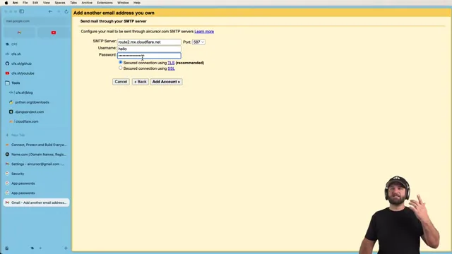
그래서 Gmail의 서버로 바꿔요. 아래 화면이 고친 결과예요. 넣는 값을 정리하면 이래요.
| 칸 | 넣는 값 | 이유 |
|---|---|---|
| SMTP 서버 | smtp.gmail.com | Cloudflare는 보내기를 못 해서 Gmail 서버를 써요 |
| 포트 | 587 | 기본값 그대로 |
| 보안 연결 | TLS | 기본값 그대로 |
| 사용자 이름 | Gmail 주소(aircursor@gmail.com) | 앱 비밀번호가 이 계정의 것이라서요 |
| 비밀번호 | 앱 비밀번호 | 진짜 Gmail 비밀번호가 아니에요 |
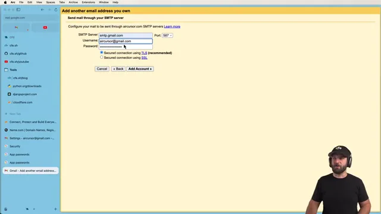
Add Account를 누르면 Gmail이 hello@aircursor.com으로 확인 메일을 보내요. 이 메일은 Cloudflare Email Routing을 거쳐 다시 같은 Gmail로 들어와요. 아래 화면 머리글을 보면 받는 사람(to)이 aircursor@gmail.com이 아니라 hello@aircursor.com이에요. 본문의 링크를 눌러 확인해요.
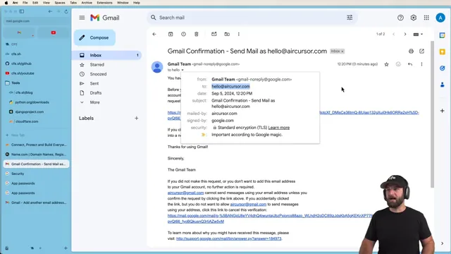
보내고 답장하기
확인이 끝나면 새 메일 창의 보내는 사람에서 도메인 주소를 고를 수 있어요. 안 보내지면 세 가지를 보라고 해요. 앱 비밀번호가 맞는지, Gmail이 아예 막지 않았는지, SMTP 설정이 위 표와 같은지예요. 메일은 Gmail 서버의 발송과 Cloudflare의 전달을 거치니 바로 오지 않을 수 있어요.
hungrypy 계정에서 hello@aircursor.com으로 'Are you there?'를 보내고 답장을 눌러 봐요. 이번엔 아래 화면처럼 From 칸이 Air Cursor <hello@aircursor.com>로 잡혀요.
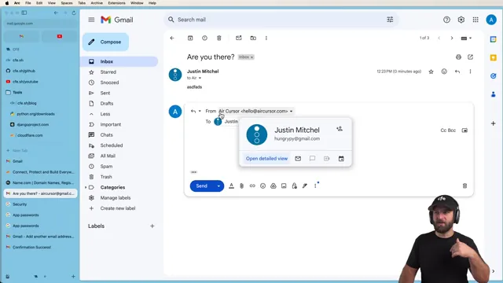
답장 주소가 제대로 안 잡히면 계정 및 가져오기 화면을 봐요. 아래 화면의 'When replying to a message:'에서 'Reply from the same address the message was sent to'가 선택돼 있어야 해요. 그 위 hello@aircursor.com 줄에는 'Mail is sent through: smtp.gmail.com, Secured connection on port 587 using TLS'가 적혀 있어요.
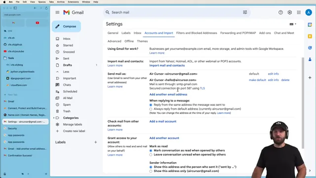
주소마다 이 과정을 반복하면 돼요. 여러 사람이 함께 쓸 주소라면 그 주소 전용 Gmail 계정을 따로 만들고, 혼자 쓰면 한 받은편지함에 여러 주소를 몰아도 된다고 해요. 다만 Gmail 웹이 아닌 곳, 예를 들어 모바일 앱에서는 답장 주소가 이렇게 깔끔하게 안 잡힐 수 있어요.
왜 할 만하고, 언제까지 쓸 수 있을까요
마지막에 발표자는 왜 이걸 하는지 정리해요. 스타트업이 @gmail.com 주소로 연락해 오면 '이 회사 괜찮나?' 싶어지기 쉬워요. 도메인 주소가 있어도 그 의심이 다 사라지진 않지만, 적어도 주소 때문에 의심받진 않아요.
They literally have no reason to not have a custom domain name.
도메인 주소를 안 쓸 이유가 정말 하나도 없어요.
— 영상 22:43
그렇다고 영원한 해법은 아니에요. 프로젝트나 조직이 커지면 이 방식은 번거로워지고, 그때는 유료 방법으로 넘어가야 해요. 그래도 Gmail이 이 기능을 계속 지원한다면 몇 년은 쓸 수 있을 거라고 봐요. Gmail이 막을 이유는 딱히 없고, 걸리는 부분이 있다면 전달 쪽인데 그건 Cloudflare가 맡고 있다는 거예요.
한두 번 해 보면 손에 익으니, 모든 새 프로젝트의 첫 작업으로 도메인 메일부터 만들어 두라는 게 발표자의 마무리예요.